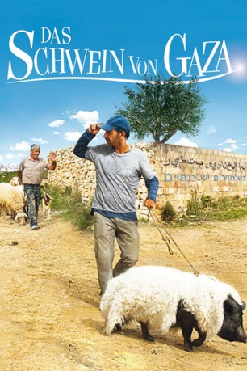

#8182 Das Schwein von Gaza
 
 IMDB-Wertung: 7.1 / 10
IMDB-Wertung: 7.1 / 10  Metascore: 0
Metascore: 0 
Der Fischer Jafaar lebt im Gazastreifen und betet jeden Tag darum, dass ihm endlich mal wieder ein großer Fisch ins Netz geht. Als ihm eines Tages jedoch ein lebendiges Schwein aus dem Netz entgegenblickt, traut Jafaar seinen Augen nicht. Doch was soll er mit dem Schwein machen? Die Tiere gelten als unrein und niemand will es kaufen. Je mehr Jafaar versucht, das Schwein loszuwerden, desto mehr Verwendungsmöglichkeiten tun sich auf. Am Ende bringt das Schwein Jafaar doch Glück.
Jahr: 2011
Dauer: 98 Minuten
FSK: 12
Land: Frankreich Studio: Alamode FilmTonspuren:
Untertitel: Deutsch,
Auflösung: 1080p (1920x1040) Größe: 5969 MB
Genre: Komödie
Regisseur: Sylvain Estibal
Drehbuch: Sylvain Estibal
Soundtrack: Aqualactica, Boogie Balagan
Darsteller:
 Sasson Gabai als Jafaar
Sasson Gabai als Jafaar- Khalifa Natour als Hussein
 Ulrich Tukur als Officer U.N.
Ulrich Tukur als Officer U.N.- Maurad Saad als Jihad Cameraman
 Manuel Cauchi als Abo-Zouhair - the predicator
Manuel Cauchi als Abo-Zouhair - the predicator- Edward Mercieca als Israeli Officer
- Adam Gabay als Kid in the Settlement
 Malcolm Ellul als Palestinian on Motorbike (uncredited)
Malcolm Ellul als Palestinian on Motorbike (uncredited)- Baya Belal als Fatima
- Myriam Tekaïa als Yelena
- Gassan Abbas als Barber
- Lotfi Abdelli als Young Policeman
- Khaled Riani als Salesman
- Uri Gabay als Netsah
- Ido Shaked als Soldier Terrasse 1
- Thierry Lopez als Soldier Terrasse 2
- Zohar Wexler als Colony Soldier
- Khereddine Ennasri als Jihadist 3
- David Leguesse als Jihadist 2
- Nicholas Galea als Football Boy
- Bashir Wakil als Walid
- Michael Sciortino als Rabbi
- Manuel Mutaz als Jihadist hold
- Mark Mifsud als Young Palestinian
- Salame Jarboua als Young Palestinian 2
- Mahmoud Moghrabi als Jihadist
- Chris Micallef als Israeli Officer 2
- Harry Borg als Fisherman 1
- Andrew Galea als Check Point Soldier
- Anthony Ellul als Fisherman 2
- Philip Mizzi als Fisherman 3
- Mikhail Basmadjian als Police Officer
- Nizer Al Gadi als Palestinian at check point
- Tiziana Azzopardi als Woman with Child
- Miki Shoval als Colonist
- Rania Zouari als Woman pharmacy
- Mikhail Léon Farrugia als Boy Pharmacy
- Daniel Slim als Boss
- Mark Giantar als Son of Boss
- Frank Tanti als Client
- Marcelle Theuma als Woman Neighbour
- Sanâa Estibal als Girl in the Settlement
- Jonathan Grima als Ice Cream Sailer
- Imran Estibal als Kid in the Settlement
- Luay Merai als Slapped Kid
- Jean Hourth Sok als Hip-hop dancer
- Luca 'Lazylegs' Patuelli als Hip-hop dancer
- Babe als Pig
- Charlotte als Pig
Datei: X:\2011(N-Z)\Schwein von Gaza, Das (2011, FSK12, 1920x1040).mkv seit 07.02.2018
Festplatte: HD 2011(G-Z)
 Es gibt insgesamt 132 Filme in der Gruppe '2011(N-Z)'
Es gibt insgesamt 132 Filme in der Gruppe '2011(N-Z)'